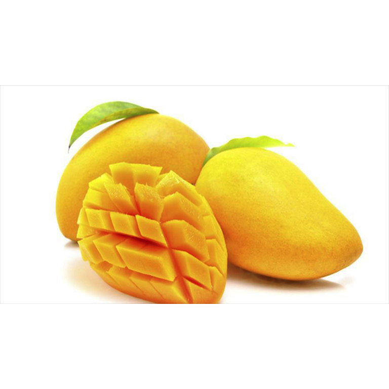

18 Cáscara de mango
18.1 (Mangifera Indica)

Gustavo R. Velderrain Rodríguez, Ramón Pacheco Ordaz, Gustavo A. González Aguilar
Coordinación de Tecnología de Alimentos de Origen Vegetal, Centro de Investigación en Alimentación y Desarrollo, A.C. Carretera a la Victoria Km 0.6. C.P. 83304, Hermosillo, Sonora, México.
Autor en correspondencia: gustavo@ciad.mx
18.2 Características Agronómicas
18.2.1 Taxonomía
El mango (Mangifera indica Linn.) es un fruto tropical de gran importancia comercial, morfológicamente pertenece al grupo de los frutos drupáceos, contiene únicamente una gran semilla rodeada por un carnoso mesocarpio. El mango pertenece a las plantas dicotiledóneas, miembro de la familia Anacardiaceae, la cual se encuentra dentro del orden Sapindales. En la Tabla 18.1, se presenta la clasificación taxonómica del mango.
| Reino | Plantae |
| Filo | Spermatophyta |
| Subfilo | Angiospermae |
| Clase | Dicotyledoneae |
| Orden | Sapindales |
| Familia | Anacardiaceae |
| Género | Mangifera |
| Especie | Mangifera indica |
| Fuente: (Dar et al., 2016) |
El mango es un fruto indehiscente simple, alargado con una pequeña proyección cónica que se forma lateralmente en el extremo proximal del fruto conocido como “pico”, el cual es un rasgo característico. Su pericarpio se caracteriza por un epicarpio liso, un mesocarpio carnoso y un endocarpio leñoso (llamado hueso). El epicarpio, también llamado cáscara o piel, tiene una textura lisa-cerosa la cual es de color verde y gradualmente se vuelve amarillo, naranja, rojo, púrpura o una combinación de estos colores, cuando el fruto alcanza la madurez. Los frutos pueden variar en tamaño, forma, color, contenido de fibra y sabor dependiendo de la variedad. Los frutos pueden ser redondos, ovalados, oblongos o alargados y su peso puede variar desde 50 g hasta 2 kg (Bally, 2006; Tharanathan, Yashoda, y Prabha, 2006).
Su origen data de hace 4,000 años en el sureste de Asia en la región Indo-Birmana y actualmente, es cultivado en alrededor de 90 países (Diarra, 2014). Existen aproximadamente 1,000 variedades de mango disponibles en el mundo; aun así, solamente unas pocas se cultivan a escala comercial. Su cultivo ocupa casi 3.7 millones de hectáreas a nivel mundial y es el segundo fruto tropical mayormente cultivado y comercializado, después del plátano. Actualmente, las variedades más populares de mango que se cultivan son Tommy Atkins, Keitt, Kent, Osteen, Haden y Valencia Pride, las cuales se ejemplifican en la Figura 18.1 (Evans, Ballen, y Siddiq, 2017)
Figura 18.1: Variedades de mayor importancia comercial.
18.2.2 Generación De Subproductos
India ocupa el primer lugar a nivel mundial en la producción de mango con 18 millones de toneladas, mientras que México ocupa el quinto lugar con una producción de 1 millón 400 mil toneladas (SIAP, 2016). Su consumo per cápita en México es de 12.2 kg al año y se estima que 1 de cada 25 mangos consumidos en el mundo es mexicano (SAGARPA, 2016). La pulpa es la principal parte del fruto que se consume, ya sea que se consuma fresca, en conservas o bien que se utilice para la elaboración de jugos, concentrados, mermeladas y puré. Durante el procesamiento del mango para la elaboración de dichos productos, se desechan la cáscara, el bagazo y la semilla del mango, los cuales equivalen al 35-65% del peso inicial del fruto (Ayala-Zavala et al., 2011).
Actualmente, la mayoría de las industrias procesadoras de frutas desechan grandes cantidades de estos subproductos (cáscara y semillas), debido a que carecen de valor comercial, ocasionando graves problemas de contaminación al medio ambiente. Se estima que aproximadamente el 80% de los subproductos generados provienen del hogar y de la industria procesadora de alimentos (Mirabella, Castellani, y Sala, 2014). Además, de ser un problema de contaminación, el desecho de subproductos también representa un gran gasto económico para las empresas, debido a la escasez de vertederos y a los altos costos de transportación.
18.2.3 Cáscara De Mango Como Subproducto Agroindustrial
Se ha propuesto como alternativa la utilización de subproductos para elaborar nuevos productos, con el fin de disminuir los problemas de contaminación y pérdidas económicas. La cáscara de mango comprende aproximadamente entre el 15-18% del peso total del fruto y últimamente, ha atraído la atención de la comunidad científica debido a su composición (Kim et al., 2012). La cáscara de mango es rica en fibra dietaria (pectina, celulosa y hemicelulosa), proteínas, azúcares reductores, compuestos bioactivos como carotenoides, vitamina C y compuestos fenólicos (C. Ajila, Bhat, y Rao, 2007). Debido a esto, se ha evaluado su uso para diferentes fines biotecnológicos como la producción de etanol, ácido láctico, pectinasas, biogás (metano), alimentación de ganado, extracción de pectina, compuestos antimicrobianos, compuestos bioactivos con beneficios a la salud y también puede utilizarse como ingrediente en la formulación de alimentos como pastas y productos de panadería (MOK, 2014).
18.3 Características Nutricionales del Mango
Actualmente, debido al aumento en la concientización de las personas acerca de la relación entre el consumo de frutas y verduras y la prevención de enfermedades, existe una mayor demanda y producción de estos alimentos. Entre los principales componentes nutricionales en frutas y verduras se encuentran agua, fibra, proteínas, grasas, ácidos orgánicos y carbohidratos. De los componentes previamente mencionados, el agua y carbohidratos son considerados como los más abundantes. El contenido de agua en frutos por lo regular oscila entre el 60 y 95% del peso total del fruto, mientras que los carbohidratos pueden constituir entre el 50-80% del peso de materia seca en frutos. Sin embargo, el contenido de macro y micronutrientes puede variar entre frutos, por lo cual el conocer el contenido nutricional de éstos, nos podrá ayudar a incluirlos en nuestra dieta de la manera más apropiada.
18.3.1 Composición Nutricional de la Pulpa
El consumo de pulpa de mango tiene una aportación importante de macro (Tabla 18.2) y micronutrientes (Tabla 18.3). El consumo de 100 g de pulpa aporta alrededor de 63.5 calorías, 0.7 g de proteína y 1.76 g de fibra dietaria total (principalmente fibra soluble). Por otro lado, dentro de los azúcares predominantes en la pulpa del mango, se encuentran fructosa, sacarosa y glucosa, ya que la pulpa de mango es reconocida por ser una fuente de heteropolisacáridos de ácido urónico y azúcares neutros (pectinas), con potencial uso en la industria de alimentos en donde comúnmente se usan las pectinas cítricas (Wall-Medrano et al., 2015). Debido a sus propiedades organolépticas y su gran demanda comercial, este fruto ha sido utilizado para elaborar productos alimentarios con un bajo aporte energético e importante contenido de fibra dietaria.
| Componentes | Tejido vegetal | Pulpa |
|---|---|
| Energía (kcal/100g) | 63.50 |
| Agua (g/100g) | 83.10 |
| Proteínas(g/100g) | 0.70 |
| Lípidos (g/100g) | 0.20 |
| Carbohidratos (g/100g) | 13.60 |
| Azúcares (g/100g) | 13.10 |
| Almidón (g/100g) | 0.30 |
| Fibra (g/100g) | 1.76 |
| Fuentes: USDA (2018) |
| Componentes | Tejido vegetal | Pulpa |
|---|---|
| Vitamina A (µg/100g) | 54.000 |
| Vitamina B1(mg/100g) | 0.058 |
| Vitamina B2 (mg/100g) | 0.057 |
| Vitamina B3 (mg/100g) | 0.717 |
| Vitamina B6 (mg/100g) | 0.134 |
| Vitamina B9 (µg/100g) | 14.000 |
| Vitamina C (mg/100g) | 27.700 |
| Vitamina E (mg/100g) | 1.120 |
| Calcio (mg/100g) | 10.000 |
| Fósforo (mg/100g) | 11.000 |
| Magnesio (mg/100g) | 9.000 |
| Hierro (mg/100g) | 0.130 |
| Potasio (mg/100g) | 156.000 |
| Zinc (mg/100g) | 0.040 |
| Fuentes: USDA (2018) |
Además, la pulpa de mango tiene un importante contenido de micronutrientes, entre los que destacan la vitamina A (esencial para el mantenimiento de los tejidos epiteliales piel y mucosas), la vitamina C (de alta capacidad antioxidante), vitamina E, entre otros. Por otro lado, en la pulpa también se encuentran presentes minerales como el potasio y magnesio (los cuales intervienen en la transmisión nerviosa y muscular), además de aportar pequeñas cantidades de hierro, fósforo y calcio (Sumaya-Martínez, Sánchez Herrera, Torres García, y García Paredes, 2012). En particular, el mango en casi todas sus variedades es una fuente rica de vitamina C (VitC), donde el consumo de 100 g de pulpa, aporta cerca de 28 mg de VitC, la cual es suficiente para cubrir el 45% de la ingesta diaria recomendada de VitC en personas entre 19-50 años (Wall-Medrano et al., 2015). El contenido de VitC confiere a este fruto una importante actividad antioxidante, la cual puede ejercer esta molécula por sí misma, o trabajar de manera sinérgica con el resto de compuestos antioxidantes presentes en este fruto.
18.3.2 Composición Nutricional de Cáscara y Hueso
La cáscara y hueso del mango representan el 32% del peso total del fruto, donde el peso de la cáscara oscila entre 15-18, mientras que el peso del hueso está entre 13-29% (Sumaya-Martínez et al., 2012; Wall-Medrano et al., 2015). Sin embargo, estos tejidos vegetales pueden ser también considerados como fuente de macro (Tabla 18.4) y micronutrientes (Tabla 18.5) importantes. Entre estos tejidos vegetales, el contenido energético por cada 100 g es mayor en el consumo de cáscara (246.67kcal), lo cual está relacionado con la diferencia en el contenido de carbohidratos totales entre cáscara y hueso (63.8 y 32.24g/100g, respectivamente). Sin embargo, a pesar de esta diferencia en el contenido energético, el consumo de cáscara podría aportar 6 veces más fibra que el hueso.
| Componentes | Tejido vegetal - Cáscara | Tejido vegetal - Hueso |
|---|---|---|
| Energía (kcal/100g) | 248.67 | 117.00 |
| Agua (g/100g) | 10.50 | 45.20 |
| Proteínas(g/100g) | 3.60 | 6.36 |
| Lípidos (g/100g) | 2.20 | 13.00 |
| Carbohidratos (g/100g) | 63.80 | 32.24 |
| Azúcares (g/100g) | 34.38 | 11.24 |
| Almidón (g/100g) | 29.80 | 21.00 |
| Fibra (g/100g) | 12.50 | 2.02 |
| (1996); Torres-León et al. (2016). | ||
| Fuentes: Cedeño-Reyes y Zambrano-Delgado (2014); Larrauri, Rupérez, Borroto, y Saura-Calixto |
La información nutricional mostrada en la Tabla 18.6, nos indica que el consumo de hueso podría aportar mayor variedad de micronutrientes, especialmente minerales como calcio, magnesio y potasio. Sin embargo, en comparación al consumo de hueso, la cáscara de mango podría contribuir con cantidades más elevadas de vitamina A (16 veces más) y C (92 veces más). No obstante, aun cuando es en pequeñas concentraciones, el consumo regular de hueso de mango podría aportar vitaminas (A, B1, B2, B6, C y E) ausentes o escasas en la cáscara. Es importante destacar que el consumo de cáscara y hueso tienen un aporte de micronutrientes comparable al de pulpa, y en algunos casos (Vitamina A, C, calcio y hierro) éste es mucho mayor en el consumo de estos tejidos vegetales.
| Componentes | Tejido vegetal - Cáscara | Tejido vegetal - Hueso |
|---|---|---|
| Vitamina A (µg/100g) | 248.67 | 15 |
| Vitamina B1(mg/100g) |
|
0.08 |
| Vitamina B2 (mg/100g) |
|
0.03 |
| Vitamina B3 (mg/100g) |
|
|
| Vitamina B6 (mg/100g) |
|
0.19 |
| Vitamina B9 (µg/100g) |
|
|
| Vitamina C (mg/100g) | 51.54 | 0.56 |
| Vitamina E (mg/100g) |
|
1.30 |
| Calcio (mg/100g) | 60.63 | 111.3 |
| Fósforo (mg/100g) |
|
|
| Magnesio (mg/100g) |
|
94.8 |
| Hierro (mg/100g) | 12.79 | 11.9 |
| Potasio (mg/100g) |
|
22.3 |
| Zinc (mg/100g) | 0.66 | 1.10 |
| Fuente: Aziz, Wong, Bhat, y Cheng (2012); Romelle, Ashwini, y Ragu (2016); Kittiphoom (2012 |
Sin embargo, estos tejidos vegetales pueden presentar algunos componentes considerados como “anti-nutricionales” (Tabla 18.6), debido al efecto que ocasionan a nivel biológico. Entre ambos tejidos, los mayores contenidos de componentes antinutricionales se han reportado en cáscara, principalmente de oxalato (404.88 ± 13.06 mg/100g) y cianuro de hidrógeno (45.90 ± 0.01 mg/100g). Niveles bajos de oxalato son deseables en los alimentos, debido a que estos pueden unirse al calcio en los alimentos, reduciendo su disponibilidad para funciones fisiológicas y bioquímicas normales. A pesar de que el cianuro de hidrógeno es una sustancia extremadamente venenosa, su contenido en cáscara se encuentra en niveles permisibles (< 350mg/100g). Por otro lado, la naturaleza anti-nutricional del ácido fítico radica en su capacidad para quelar minerales divalentes como hierro, calcio, cobre y zinc, lo que los hace biológicamente no disponibles. Este compuesto anti-nutricional no puede ser descompuesto por humanos y organismos monogástricos. Por lo tanto, se recomienda moderación en el uso de cáscara de mango en productos alimentarios, ó el uso de pre-tratamientos térmicos que ayuden a reducir el contenido de estos compuestos.
| Componentes | Tejido vegetal - Cáscara | Tejido vegetal - Hueso |
|---|---|---|
| Oxalato (mg/100g)) | 404.88 ± 13.06 | 1.49 ± 0.01 |
| Cianuro de hidrógeno (mg/100g) | 45.90 ± 0.01 | 1.26 |
| Alcaloides (mg/100g) | 8.34 ± 1.21 | 0.01 ± 0.00 |
| Fitatos (g/100g) | 1.63 ± 0.10 | 0.07 |
| Taninos (g/100g) | 0.08 ± 0.00- | 0.001 ± 0.000 |
| Saponinas (mg/100g) |
|
0.04 ± 0.00 |
| Fuente: Romelle et al. (2016); Ojokoh (2007); Okpala y Gibson-Umeh (2013); Fowomola (2010) |
De acuerdo a las tablas de contenido nutricional, es destacable que el contenido de macro (fibra dietaria) y micro (vitaminas y minerales) nutrientes hacen de la cáscara de mango un ingrediente funcional atractivo para su incorporación en formulaciones de productos alimentarios con potencial efecto benéfico en la salud del consumidor. Por lo tanto, las siguientes secciones estarán enfocadas a discutir las ventajas de la utilización de este subproducto en alimentos funcionales y/o productos nutracéuticos.
18.4 Productos Alimenticios Elaborados con Cáscara de Mango
Debido a los diferentes compuestos nutricionales, además de su alto contenido en compuestos bioactivos, se ha buscado comercializar este fruto en distintas presentaciones. En la Figura 18.2, se muestran los ejemplos más comunes en los que se pueden encontrar comercializados los distintos tejidos vegetales del fruto de mango. Su pulpa es comúnmente comercializada como un producto fresco cortado, el cual ha ganado mucha popularidad en los últimos años, por ser un producto que es fácilmente incorporado a la dieta y estilo de vida apresurado de las personas. Por otro lado, el hueso de mango es en algunos casos utilizado como polvo para la extracción de compuestos funcionales adicionados a suplementos alimenticios, o para la extracción de aceites. Sin embargo, el descubrimiento de la gran cantidad de compuestos nutricionales (carbohidratos y fibra dietaria) en su cáscara, la ha posicionado como una alternativa más atractiva para la obtención de ingredientes funcionales en forma de polvos deshidratados, los cuales son utilizados para enriquecer harinas y/o productos de panadería (C. Ajila, Leelavathi, y Rao, 2008; C. M. Ajila, Aalami, Leelavathi, y Rao, 2010).
Figura 18.2: Productos de mango comercializados en el mercado.
En la Figura 18.3, se muestran los productos alimentarios más estudiados para la adición de cáscara de mango, entre los cuales destacan: pastas y/o macarrones, frituras o ‘snacks’, ‘muffins’, néctar de mango y/o pan de molde. Su alta capacidad antioxidante, además de su importante contenido de fibra dietaria, hacen de la cáscara de mango un ingrediente funcional atractivo para la adición en macarrones o pastas. De acuerdo al estudio realizado por C. M. Ajila et al. (2010), la adición 7.5% de polvo de cáscara de mango a macarrones aumenta el contenido de fibra dietaria de un 8.6 a un 17.8%, el de compuestos fenólicos de un 0.46 a 1.80 mg/g y la concentración de carotenoides de 5 a 84 µg/g. Además, su adición aumenta la textura de los macarrones, sin afectar su aceptabilidad comercial.
Figura 18.3: Productos alimentarios enriquecidos con la adición de cáscara de mango en su formulación.
De manera similar, el estudio realizado por Blancas-Benítez, de Jesús Avena-Bustillos, Montalvo-González, Sáyago-Ayerdi, y H. McHugh (2015), demostró que la sustitución de azúcar de caña por una proporción de polvos de pulpa (A) y de cáscara y pasta (B) de mango (25:75, A:B) permiten reducir el contenido de azúcar en snacks mientras se aumenta el contenido de fibra dietaria de 5.46 a 13.39%, e incrementa el contenido de compuestos fenólicos de 107.89 a 626 mg/100 g. Una respuesta similar se observó en la adición de cáscara de mango en ‘muffins’, donde aumentó el contenido de fibra dietaria y compuestos fenólicos, mientras se observó una disminución en la tasa de hidrólisis del almidón, lo que podría ayudar a reducir los niveles de glucosa tras el consumo de este producto alimentario (Ramírez-Maganda et al., 2015).
18.4.1 Propiedades Funcionales de la Cáscara de Mango
Tanto pulpa como cáscara de mango son consideradas como fuente importante de compuestos bioactivos, entre los que destacan, compuestos fenólicos, vitamina C, carotenoides y fibra dietaria (Palafox-Carlos, Yahia, y González-Aguilar, 2012; Sáyago-Ayerdi et al., 2012). De acuerdo a estudios realizados acerca del consumo de pulpa de mango, se ha observado que su inclusión a la dieta puede ayudar a aumentar la capacidad antioxidante en plasma, así como a reducir los niveles de triglicéridos en plasma, los cuales están relacionados con la incidencia de aterosclerosis coronaria (Robles-Sánchez et al., 2011). El aumento de la capacidad antioxidante en plasma tras el consumo directo de frutos de mango, podría ayudar a prevenir o disminuir la incidencia de enfermedades crónico-degenerativas (Kanazawa, 2011). Esto, se debe a que todos aquellos compuestos bioactivos con propiedad antioxidante en plasma, podrían ayudar a proteger a las células y a algunas biomoléculas en el organismo del consumidor (Masibo y He, 2008). Estos incrementos en la actividad antioxidante son atribuidos principalmente a su alto contenido en compuestos fenólicos y carotenoides (Tabla 18.8) que presentan la mayoría de las variedades de mango, como la ‘Ataulfo’ (Palafox-Carlos et al., 2012).
| Tejido vegetal | Compuesto bioactivo - Fenoles Totales (mg/100g) | Compuesto bioactivo - Carotenoides Totales (mg/100g) |
|---|---|---|
| Pulpa | 1,725.2 | 5.17 |
| Cáscara | 2,032–3,185 | 4.05 |
| Hueso | 11,228–20,034 | 0.79 |
| Fuente: Sogi, Siddiq, y Dolan (2015): Sogi, Siddiq, Greiby, y Dolan (2013) |
Sin embargo, el consumo de cáscara de mango contribuye con una mayor aportación de compuestos bioactivos, macro y micronutrientes que la pulpa, entre los que destacan compuestos fenólicos, carotenoides, fibra dietaria, vitaminas (A y C) y minerales (calcio y hierro). En un estudio reciente, se observó que los residuos de cáscara de mango pueden aportar una actividad antioxidante (DPPH y ABTS) dos veces mayor que la obtenida a partir de residuos de pasta (Francisco J. Blancas-Benítez et al., 2015). Este estudio reportó que los compuestos fenólicos mayoritarios en la cáscara de mango son los ácidos clorogénico e hidroxicinámico.
18.4.2 Propiedades Terapéuticas y Farmacológicas de la Cáscara De Mango
En los últimos años, diferentes estudios han reportado una gran variedad de efectos benéficos relacionados directamente a los compuestos antioxidantes (compuestos fenólicos y carotenoides) presentes en pulpa, cáscara y hueso de mango. Estos efectos incluyen regulación del metabolismo de nutrientes, disminución en mediadores de inflamación y de riesgo cardiovascular (Wall-Medrano et al., 2015). Sobre este último beneficio, se ha demostrado recientemente que 1 mango entero o fresco-cortado al día por un período de 30 días puede reducir en un 37-38% el nivel de triglicéridos y VLDL en personas jóvenes (20-50 años) (Robles-Sánchez et al., 2011).
Sin embargo, estudios recientes también sugieren que estos efectos dependen de la bioaccesibilidad y biodisponibilidad de los antioxidantes en la matriz alimentaria. En este sentido, estudios farmacocinéticos relacionados con el consumo de mango con diferente matriz alimentaria (pulpa o jugo), han dado pistas sobre el metabolismo de los cinco principales ácidos fenólicos presentes en la pulpa y jugo del mango ‘Ataulfo’ en plasma (ácido gálico, clorogénico, protocatecuico, ferúlico y gentísico), en el organismo humano tras su consumo. En este estudio, se encontró que la mayor concentración plasmática máxima (Cmax) se produjo entre 2 y 4 h después del consumo; las tasas de excreción a las 8-24 h fueron las máximas. La pulpa de mango contribuyó a una mayor absorción de ácido protocatecuico (49%), el jugo de mango contribuyó a una mayor absorción de ácido clorogénico (62%). Estos resultados sugieren que existe una buena biodisponibilidad de los compuestos fenólicos en la pulpa de mango, sin embargo, ésta puede aumentar cuando la pulpa se procesa en jugo.
Por otro lado, se ha observado que la cáscara de mango contiene una mayor diversidad de compuestos fenólicos (Figura 18.4), encontrándose compuestos como xantonas (mangiferina), ácidos fenólicos (ácido gálico, siríngico, p-cumárico, 2-hidroxibenzoico, ferúlico, protocateico y elágico) y flavonoides (quercetina, catequina y rutina) (Velderrain-Rodríguez et al., 2018). Actualmente, se han asociado distintos efectos benéficos a gran parte de los compuestos fenólicos identificados en la cáscara de mango, algunos de los cuales se ejemplifican en la Tabla 18.9. Los compuestos fenólicos son asociados normalmente con una contribución a los sistemas de defensa antioxidante en el organismo, sin embargo, algunas especies de compuestos fenólicos son también asociadas a efectos antiproliferativos, antiinflamatorios, antimutagénicos, antimicrobianos, entre otros.
Recientemente, Pacheco-Ordaz, Antunes-Ricardo, Gutiérrez-Uribe, y González-Aguilar (2018) han sugerido que son ácido gálico y mangiferina, los compuestos fenólicos de cáscara de mango con mayor permeabilidad intestinal celular, señalándolos como los principales promotores de su efecto benéfico a nivel intestinal. Aunado a esto, se ha propuesto que es el ácido gálico el principal compuesto responsable de promover un ambiente antioxidante a nivel intestinal y reducir la proliferación celular en células de cáncer de colon (Velderrain-Rodríguez et al., 2018). Esta información nos sugiere que debe promoverse un mayor consumo, el cual nos ayude a explotar los beneficios a la salud que aportan estos compuestos presentes en los diferentes tejidos vegetales de mango.
Figura 18.4: Principales compuestos fenólicos identificados en la cáscara de mango.
Por otro lado, entre las diferentes especies de compuestos fenólicos presentes en cáscara de mango, la xantona mangiferina es representativa del mismo. Este compuesto es clasificado como es una xantona natural, y su estructura molecular es la forma glucosilada del noratriol. Estudios recientes sugieren que la mangiferina es un compuesto inhibidor de la vía de señalización NF-κB, lo cual explica parcialmente su capacidad antiinflamatoria y su potencial anticancerígeno (Vyas, Syeda, Ahmad, Padhye, y H. Sarkar, 2012). Se ha observado en diversos estudios que la mangiferina tiene un amplio rango de actividades farmacológicas, incluyendo las acciones antioxidantes, anti-diabéticas, anti-VIH, anti-tumorales, hepatoprotectoras, antivirales, y anticancerígenas (Pal, Sinha, y Sil, 2014). Rajendran, Rengarajan, Nandakumar, Divya, y Nishigaki (2015) en un estudio con 21 individuos sanos, después de consumir 0.9 g de mangiferina, la máxima concentración de mangiferina (38.64 ± 6.75 ng/mL) en plasma se observó al transcurrir 1 hr, con una excreción o vida media del compuesto de alrededor de 7.85 ± 1.72 h.
| Compuesto bioactivo | Efecto benéfico | Referencia |
|---|---|---|
| Mangiferina | Induce apoptosis Efecto antiproliferativo | (Khare y Shanker, 2016) |
| Ácido gálico | Actividad antioxidante Efecto antimicrobiano | (Vinson y Cai, 2012) (Pacheco‐Ordaz et al., 2018) |
| Ácido elágico | Actividad antioxidante Modulación de la microbiota | (Landete, 2011) |
| Quercetina | Actividad antiinflamatoria Actividad antioxidante Efecto antiobesogénico | (Boots, Haenen, y Bast, 2008) (Jung, Cho, Ahn, Jeon, y Ha, 2013) |
| Pentagaloilglucosa | Actividad antimicrobiana Actividad antiviral | (Engels, Gänzle, y Schieber, 2012) (Liu et al., 2011) |
| Violaxantina | Actividad antiproliferativa | (Liu et al., 2011) |
| Luteína | Salud visual | (Ma y Lin, 2010) |
| B-caroteno | Actividad antioxidante Mejora el sistema inmune | (Gul et al., 2015) |
18.5 Referencias
Ajila, C., Bhat, S., y Rao, U. P. (2007). Valuable components of raw and ripe peels from two Indian mango varieties. Food Chemistry, 102(4), 1006-1011.
Ajila, C., Leelavathi, K., y Rao, U. P. (2008). Improvement of dietary fiber content and antioxidant properties in soft dough biscuits with the incorporation of mango peel powder. Journal Of Cereal Science, 48(2), 319-326.
Ajila, C. M., Aalami, M., Leelavathi, K., y Rao, U. J. S. P. (2010). Mango peel powder: A potential source of antioxidant and dietary fiber in macaroni preparations. Innovative Food Science & Emerging Technologies, 11(1), 219-224. doi:https://doi.org/10.1016/j.ifset.2009.10.004
Ayala-Zavala, J., Vega-Vega, V., Rosas-Domínguez, C., Palafox-Carlos, H., Villa-Rodríguez, J., Siddiqui, M. W., . . . González-Aguilar, G. (2011). Agro-industrial potential of exotic fruit byproducts as a source of food additives. Food Research International, 44(7), 1866-1874.
Aziz, N. A. A., Wong, L. M., Bhat, R., y Cheng, L. H. (2012). Evaluation of processed green and ripe mango peel and pulp flours (Mangifera indica var. Chokanan) in terms of chemical composition, antioxidant compounds and functional properties. Journal of the Science of Food and Agriculture, 92(3), 557-563. doi:10.1002/jsfa.4606
Bally, I. S. (2006). Mangifera indica (mango). Traditional Trees of Pacific Islands. Their Culture, Environment, and Use, 441-464.
Blancas-Benítez, F. J., de Jesús Avena-Bustillos, R., Montalvo-González, E., Sáyago-Ayerdi, S. G., y H. McHugh, T. (2015). Addition of dried ‘Ataulfo’ mango (Mangifera indica L) by-products as a source of dietary fiber and polyphenols in starch molded mango snacks. Journal of Food Science and Technology, 52(11), 7393-7400. doi:10.1007/s13197-015-1855-7
Blancas-Benítez, F. J., Mercado-Mercado, G., Quiros-Sauceda, A. E., Montalvo-González, E., González-Aguilar, G. A., y Sáyago-Ayerdi, S. G. (2015). Bioaccessibility of polyphenols associated with dietary fiber and in vitro kinetics release of polyphenols in Mexican ‘Ataulfo’ mango (Mangifera indica L.) by-products. Food & Function, 6(3), 859-868. doi:10.1039/C4FO00982G
Boots, A. W., Haenen, G. R., y Bast, A. (2008). Health effects of quercetin: from antioxidant to nutraceutical. European Journal Of Pharmacology, 585(2-3), 325-337.
Cedeño-Reyes, J. L., y Zambrano-Delgado, J. B. (2014). Cáscaras De Piña Y Mango Deshidratadas Como Fuente De Fibra Dietética En Producción De Galletas. Escuela Superior Politécnica Agropecuaria De Manabí Manuel Félix López, Calceta, Ecuador.
Dar, M. S., Oak, P., Chidley, H., Deshpande, A., Giri, A., y Gupta, V. (2016). Nutrient and flavor content of mango (Mangifera indica L.) cultivars: an appurtenance to the list of staple foods Nutritional Composition of Fruit Cultivars (pp. 445-467): Elsevier.
Diarra, S. S. (2014). Potential of mango (Mangifera indica L.) seed kernel as a feed ingredient for poultry: a review. World’s Poultry Science Journal, 70(2), 279-288.
Engels, C., Gänzle, M. G., y Schieber, A. (2012). Fast LC–MS analysis of gallotannins from mango (Mangifera indica L.) kernels and effects of methanolysis on their antibacterial activity and iron binding capacity. Food Research International, 45(1), 422-426.
Evans, E. A., Ballen, F. H., y Siddiq, M. (2017). Mango Production, Global Trade, Consumption Trends, and Postharvest Processing and Nutrition. Handbook of Mango Fruit: Production, Postharvest Science, Processing Technology and Nutrition, 1.
Fowomola, M. (2010). Some nutrients and antinutrients contents of mango (Mangifera indica) seed. African Journal of food science, 4(8), 472-476.
Gul, K., Tak, A., Singh, A., Singh, P., Yousuf, B., y Wani, A. A. (2015). Chemistry, encapsulation, and health benefits of β-carotene-A review. Cogent Food & Agriculture, 1(1), 1018696.
Jung, C. H., Cho, I., Ahn, J., Jeon, T. I., y Ha, T. Y. (2013). Quercetin reduces high‐fat diet‐induced fat accumulation in the liver by regulating lipid metabolism genes. Phytotherapy Research, 27(1), 139-143.
Kanazawa, K. (2011). Bioavailability of non-nutrients for preventing lifestyle-related diseases. Trends in Food Science & Technology.
Khare, P., y Shanker, K. (2016). Mangiferin: A review of sources and interventions for biological activities. Biofactors, 42(5), 504-514.
Kim, H., Kim, H., Mosaddik, A., Gyawali, R., Ahn, K. S., y Cho, S. K. (2012). Induction of apoptosis by ethanolic extract of mango peel and comparative analysis of the chemical constitutes of mango peel and flesh. Food Chemistry, 133(2), 416-422.
Kittiphoom, S. (2012). Utilization of mango seed.
Landete, J. (2011). Ellagitannins, ellagic acid and their derived metabolites: a review about source, metabolism, functions and health. Food Research International, 44(5), 1150-1160.
Larrauri, J. A., Rupérez, P., Borroto, B., y Saura-Calixto, F. (1996). Mango Peels as a New Tropical Fibre: Preparation and Characterization. LWT - Food Science and Technology, 29(8), 729-733. doi:https://doi.org/10.1006/fstl.1996.0113
Liu, G., Xiong, S., Xiang, Y.-F., Guo, C.-W., Ge, F., Yang, C.-R., . . . Kitazato, K. (2011). Antiviral activity and possible mechanisms of action of pentagalloylglucose (PGG) against influenza A virus. Archives of virology, 156(8), 1359-1369.
Ma, L., y Lin, X. M. (2010). Effects of lutein and zeaxanthin on aspects of eye health. Journal of the Science of Food and Agriculture, 90(1), 2-12.
Masibo, M., y He, Q. (2008). Major Mango Polyphenols and Their Potential Significance to Human Health. Comprehensive Reviews in Food Science and Food Safety, 7(4), 309-319. doi:10.1111/j.1541-4337.2008.00047.x
Mirabella, N., Castellani, V., y Sala, S. (2014). Current options for the valorization of food manufacturing waste: a review. Journal of Cleaner Production, 65, 28-41.
MOK, C. (2014). Biotechnological potentialities and valorization of mango peel waste: a review. Sains Malaysiana, 43(12), 1901-1906.
Ojokoh, A. (2007). Effect of fermentation on the chemical composition of mango (Mangifera indica R) peels. African Journal of Biotechnology, 6(16).
Okpala, L. C., y Gibson-Umeh, G. I. (2013). Physicochemical Properties of Mango Seed Flour. Nigerian Food Journal, 31(1), 23-27. doi:https://doi.org/10.1016/S0189-7241(15)30052-7
Pacheco-Ordaz, R., Antunes-Ricardo, M., Gutiérrez-Uribe, J. A., y González-Aguilar, G. A. (2018). Intestinal Permeability and Cellular Antioxidant Activity of Phenolic Compounds from Mango (Mangifera indica cv. Ataulfo) Peels. International Journal Of Molecular Sciences, 19(2), 514.
Pacheco‐Ordaz, R., Wall‐Medrano, A., Goñi, M., Ramos‐Clamont‐Montfort, G., Ayala‐Zavala, J., y González‐Aguilar, G. (2018). Effect of phenolic compounds on the growth of selected probiotic and pathogenic bacteria. Letters In Applied Microbiology, 66(1), 25-31.
Pal, P. B., Sinha, K., y Sil, P. C. (2014). Mangiferin attenuates diabetic nephropathy by inhibiting oxidative stress mediated signaling cascade, TNFα related and mitochondrial dependent apoptotic pathways in streptozotocin-induced diabetic rats. PloS one, 9(9), e107220.
Palafox-Carlos, H., Yahia, E., y González-Aguilar, G. (2012). Identification and Quantification of Major Phenolic Compounds from Mango (< i> Mangifera indica, cv. Ataulfo) Fruit by HPLC-DAD-MS/MS-ESI and Their Individual Contribution to the Antioxidant Activity during Ripening. Food Chemistry.
Rajendran, P., Rengarajan, T., Nandakumar, N., Divya, H., y Nishigaki, I. (2015). Mangiferin in cancer chemoprevention and treatment: pharmacokinetics and molecular targets. Journal of Receptors and Signal Transduction, 35(1), 76-84. doi:10.3109/10799893.2014.931431
Ramírez-Maganda, J., Blancas-Benítez, F. J., Zamora-Gasga, V. M., García-Magaña, M. d. L., Bello-Pérez, L. A., Tovar, J., y Sáyago-Ayerdi, S. G. (2015). Nutritional properties and phenolic content of a bakery product substituted with a mango (Mangifera indica) ‘Ataulfo’ processing by-product. Food Research International, 73, 117-123. doi:https://doi.org/10.1016/j.foodres.2015.03.004
Robles-Sánchez, M., Astiazarán-García, H., Martín-Belloso, O., Gorinstein, S., Álvarez-Parrilla, E., De la Rosa, L. A., . . . González-Aguilar, G. A. (2011). Influence of whole and fresh-cut mango intake on plasma lipids and antioxidant capacity of healthy adults. Food Research International, 44(5), 1386-1391.
Romelle, F. D., Ashwini, R., y Ragu, S. (2016). Chemical composition of some selected fruit peels. European Journal of Food Science and Technology, 4(4), 12-21.
SAGARPA. (2016). Mango Mexicano. Retrieved from https://www.gob.mx/cms/uploads/attachment/file/257078/Potencial-Mango.pdf.
Sáyago-Ayerdi, S. G., Moreno-Hernández, C. L., Montalvo-González, E., García-Magaña, M. L., de Oca, M. M.-M., Torres, J. L., y Pérez-Jiménez, J. (2012). Mexican ‘Ataulfo’ Mango (Mangifera indica L) as a source of hydrolyzable tannins. Analysis by MALDI-TOF/TOF MS. Food Research International.
SIAP. (2016). Atlas Agroalimentario 2016: Servicio de Información Agroalimentaria y Pesquera. Secretaría de Agricultura, Ganadería, Desarrollo Rural, Pesca y Alimentación México DF.
Sogi, D. S., Siddiq, M., y Dolan, K. D. (2015). Total phenolics, carotenoids and antioxidant properties of Tommy Atkin mango cubes as affected by drying techniques. LWT - Food Science and Technology, 62(1, Part 2), 564-568. doi:https://doi.org/10.1016/j.lwt.2014.04.015
Sogi, D. S., Siddiq, M., Greiby, I., y Dolan, K. D. (2013). Total phenolics, antioxidant activity, and functional properties of ‘Tommy Atkins’ mango peel and kernel as affected by drying methods. Food Chemistry, 141(3), 2649-2655. doi:https://doi.org/10.1016/j.foodchem.2013.05.053
Sumaya-Martínez, M. T., Sánchez Herrera, L. M., Torres García, G., y García Paredes, D. (2012). RED DE VALOR DEL MANGO Y SUS DESECHOS CON BASE EN LAS PROPIEDADES NUTRICIONALES Y FUNCIONALES. Revista Mexicana de Agronegocios, 30, 826-833.
Tharanathan, R., Yashoda, H., y Prabha, T. (2006). Mango (Mangifera indica L.),“The king of fruits”—An overview. Food Reviews International, 22(2), 95-123.
Torres-León, C., Rojas, R., Contreras-Esquivel, J. C., Serna-Cock, L., Belmares-Cerda, R. E., y Aguilar, C. N. (2016). Mango seed: Functional and nutritional properties. Trends in Food Science & Technology, 55, 109-117. doi:https://doi.org/10.1016/j.tifs.2016.06.009
USDA. (2018). National Nutrient Database for Standard Reference Legacy Release. (Basic Report: 09176, Mangos, raw “a”). Retrieved 22/05/2018 https://ndb.nal.usda.gov/ndb/foods/show/09176?n1=%7BQv%3D1%7D&fgcd=&man=&lfacet=&count=&max=25&sort=default&qlookup=mango&offset=&format=Abridged&new=&measureby=&ds=SR&Qv=1&qt=&qp=&qa=&qn=&q=&ing=
Velderrain-Rodríguez, G. R., Torres-Moreno, H., Villegas-Ochoa, M. A., Ayala-Zavala, J. F., Robles-Zepeda, R. E., Wall-Medrano, A., y González-Aguilar, G. A. (2018). Gallic Acid Content and an Antioxidant Mechanism Are Responsible for the Antiproliferative Activity of ‘Ataulfo’ Mango Peel on LS180 Cells. Molecules, 23(3), 695.
Vinson, J. A., y Cai, Y. (2012). Nuts, especially walnuts, have both antioxidant quantity and efficacy and exhibit significant potential health benefits. Food & Function, 3(2), 134-140.
Vyas, A., Syeda, K., Ahmad, A., Padhye, S., y H. Sarkar, F. (2012). Perspectives on Medicinal Properties of Mangiferin. Mini Reviews in Medicinal Chemistry, 12(5), 412-425. doi:10.2174/138955712800493870
Wall-Medrano, A., Olivas-Aguirre, F. J., Velderrain-Rodríguez, G. R., González-Aguilar, A., De la Rosa, L. A., López-Díaz, J. A., y Álvarez-Parrilla, E. (2015). El mango: aspectos agroindustriales, valor nutricional/funcional y efectos en la salud. Nutrición Hospitalaria, 31(1), 67-75.